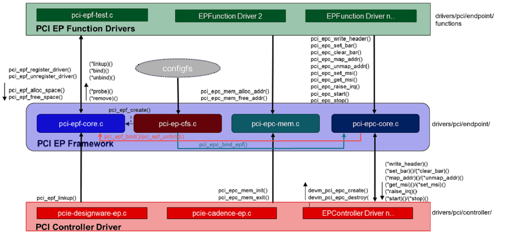
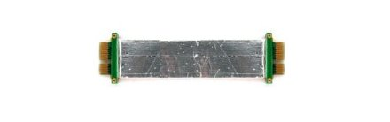
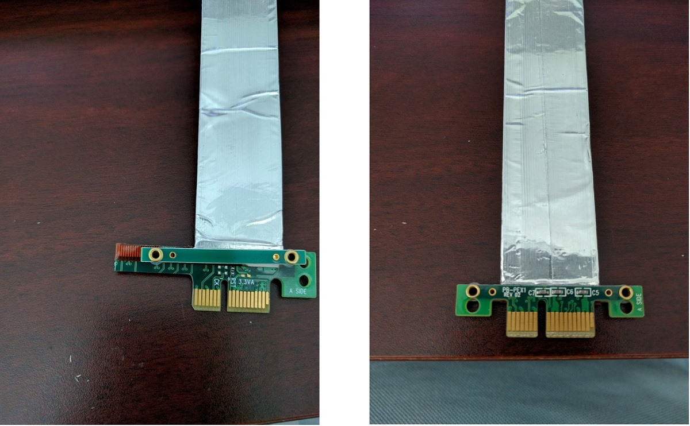
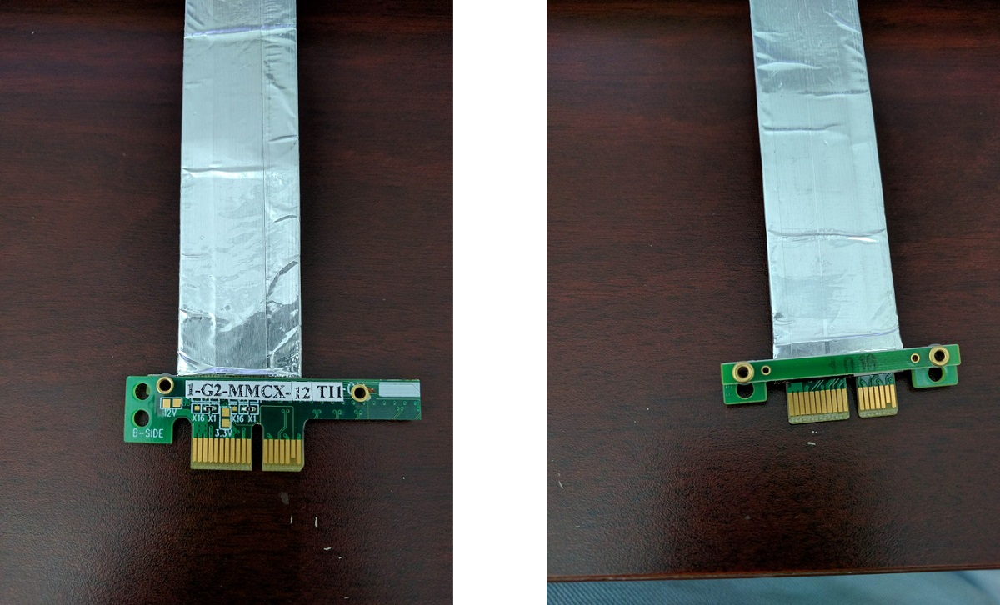
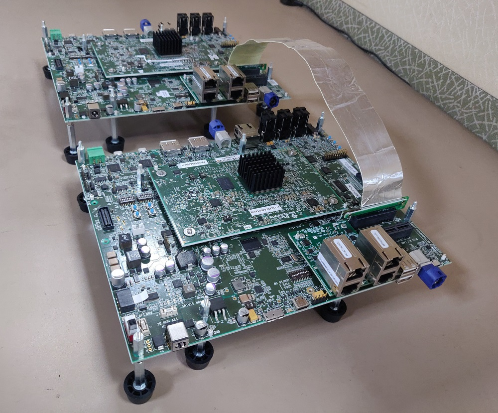
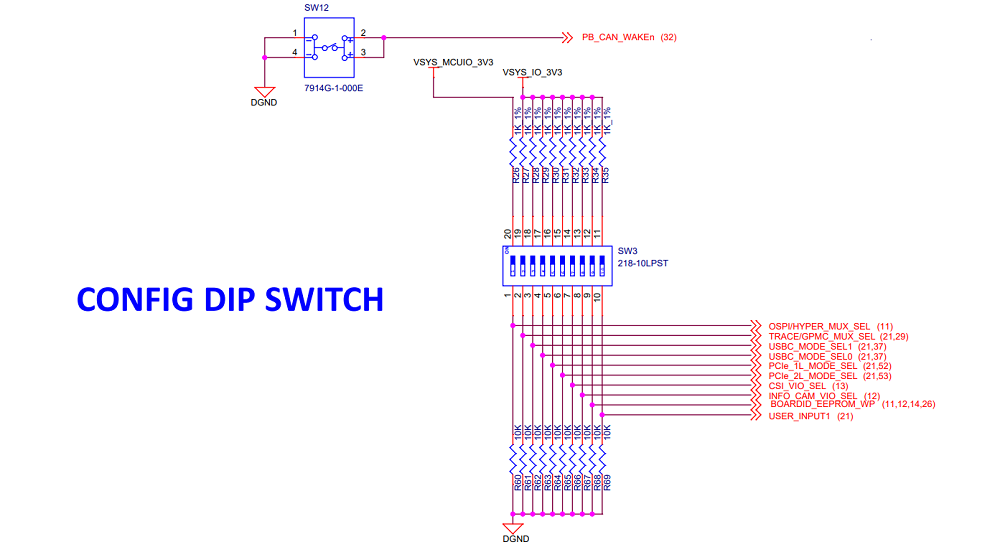

3.2.2.11. PCIe End Point¶
Introduction
PCIe controller IPs integrated in Jacinto 7 are capable of operating either in Root Complex mode (host) or End Point mode (device). When operating in End Point (EP) mode, the controller can be configured to be used as any function depending on the use case (‘Test endpoint’ and ‘NTB’ are the only PCIe EP functions supported in Linux kernel right now).
Block Diagram
Following is the block diagram of framework for endpoint mode:
Features of J7ES
There are four instances of the PCIe subsystem. Following are some of the main features:
- Each instance can be configured to operate in Root Complex mode or End Point mode
- One or two lane configuration, capable up to 8.0 Gbps/lane (Gen3)
- Single-root I/O Virtualization in End Point(EP) mode
- 6 Physical Functions (PF)
- 16 Virtual Functions (4 VF each for PF0, PF1, PF2 and PF3; 0 VF for PF4 and PF5)
- Support for Legacy, MSI and MSI-X Interrupt
- There can be 32 different address mappings in outbound address translation
unit. The mappings can be from regions reserved for each PCIe instance.
- For instance PCIE0 and PCIE1, there are two regions in SoC Memory Map:
- 128 MB region with address in lower 32 bits
- 4 GB region with address above 32 bits
- For instance PCIE2 and PCIE3, there are two regions in SoC Memory Map:
- 128 MB region with address above 32 bits
- 4 GB region with address above 32 bits
- For instance PCIE0 and PCIE1, there are two regions in SoC Memory Map:
Capabilities of J721E EVM
There are three instances of the PCIe subsystem on the EVM. Following are some of the details for each instance:
| Instance | Supported lanes | Supported Connector |
|---|---|---|
| PCIE0 | 1 lane | Standard female connector |
| PCIE1 | 2 lane | Standard female connector |
| PCIE2 | 2 lane | m.2 connector keyed for SSD (M key) |
Hardware Setup Details
J721E is, by default, intended to be operated in Root Complex mode. So in order to connect two boards, a specialized cable like below is required.
This cable can be obtained from Adex Electronics (https://www.adexelec.com).
Modify the cable to remove resistors in CK+ and CK- in order to avoid ground loops (power) and smoking clock drivers (clk+/-).
Remove the RST resistors to avoid reset (PERST) being propagated from Root Complex to End Point. Also in Root Complex to End Point loopback connection, End Point running Linux should be initialized before Root Complex comes up. Propagating reset from Root Complex to End Point will do PORZ of End Point, which should be avoided.
The ends of the modified cable should look like below:
A side
B side

Following is an image of two J721E EVMs connected back to back. There is no restriction on which end of the cable should be connected to host and device.
For End Point mode, PCIE_1L_MODE_SEL (switch 5) and PCIE_2L_MODE_SEL (switch 6) in sw3 should be set to ‘1’.
End Point (EP) Device Configuration
DTS Modification
The default dts is configured to be used in root complex mode. In order to use it in endpoint mode, the following changes have to be made in dts file.
6.x SDK (4.19 Kernel)
To configure Beta J721E EVM in EP mode, apply the following patch:
diff --git a/arch/arm64/boot/dts/ti/k3-j721e-common-proc-board.dts b/arch/arm64/boot/dts/ti/k3-j721e-common-proc-board.dts
index 57d72aa945b7..3384dd6063c2 100644
--- a/arch/arm64/boot/dts/ti/k3-j721e-common-proc-board.dts
+++ b/arch/arm64/boot/dts/ti/k3-j721e-common-proc-board.dts
@@ -734,7 +734,7 @@
};
&pcie0 {
- pci-mode = <PCI_MODE_RC>;
+ pci-mode = <PCI_MODE_EP>;
num-lanes = <1>;
};
@@ -754,6 +754,11 @@
phy-names = "pcie_phy";
};
+&pcie0_ep {
+ phys = <&serdes0_pcie_link>;
+ phy-names = "pcie_phy";
+};
+
&pcie1_rc {
reset-gpios = <&exp1 2 GPIO_ACTIVE_HIGH>;
phys = <&serdes1_pcie_link>;
To configure Alpha J721E EVM in EP mode, apply the following patch:
diff --git a/arch/arm64/boot/dts/ti/k3-j721e-proc-board-tps65917.dts b/arch/arm64/boot/dts/ti/k3-j721e-proc-board-tps65917.dts
index b9fece8d267c..d50f764c6642 100644
--- a/arch/arm64/boot/dts/ti/k3-j721e-proc-board-tps65917.dts
+++ b/arch/arm64/boot/dts/ti/k3-j721e-proc-board-tps65917.dts
@@ -769,7 +769,7 @@
};
&pcie0 {
- pci-mode = <PCI_MODE_RC>;
+ pci-mode = <PCI_MODE_EP>;
num-lanes = <1>;
};
@@ -789,6 +789,11 @@
phy-names = "pcie_phy";
};
+&pcie0_ep {
+ phys = <&serdes0_pcie_link>;
+ phy-names = "pcie_phy";
+};
+
&pcie1_rc {
reset-gpios = <&exp1 2 GPIO_ACTIVE_HIGH>;
phys = <&serdes1_pcie_link>;
7.x SDK (5.4 Kernel)
To configure J721E EVM in EP mode, apply the following patch:
diff --git a/arch/arm64/boot/dts/ti/k3-j721e-common-proc-board.dts b/arch/arm64/boot/dts/ti/k3-j721e-common-proc-board.dts
index 6788a3611..b7cd6c7b6 100644
--- a/arch/arm64/boot/dts/ti/k3-j721e-common-proc-board.dts
+++ b/arch/arm64/boot/dts/ti/k3-j721e-common-proc-board.dts
@@ -813,6 +813,7 @@
phys = <&serdes0_pcie_link>;
phy-names = "pcie_phy";
num-lanes = <1>;
+ status = "disabled";
}; &pcie1_rc {
@@ -833,7 +834,6 @@
phys = <&serdes0_pcie_link>;
phy-names = "pcie_phy";
num-lanes = <1>;
- status = "disabled";
}; &pcie1_ep {
Linux Driver Configuration
The following config options have to be enabled in order to configure the PCI controller to be used as a “Endpoint Test” function driver.
CONFIG_PCI_ENDPOINT=y
CONFIG_PCI_ENDPOINT_CONFIGFS=y
CONFIG_PCI_EPF_TEST=y
CONFIG_PCI_J721E=y
CONFIG_PCIE_CADENCE_EP=y
Endpoint Controller devices and Function drivers
To find the list of endpoint controller devices in the system:
root@evm:~# ls /sys/class/pci_epc/ 2900000.pcie-ep
To find the list of endpoint function drivers in the system:
root@evm:~# ls /sys/bus/pci-epf/drivers
pci_epf_test pci_epf_ntb
Using the pci-epf-test function driver
The pci-epf-test function driver can be used to test the endpoint functionality of the PCI controller. Some of the tests that are currently supported are:
| Test | Description |
|---|---|
| BAR | A known pattern is written and read back from BAR |
| Interrupt (legacy/MSI/MSI-X) | Raise an interrupt (legacy/MSI/MSI-X) from EP |
| Read | Read data from a buffer in RC, and perform a cyclic redundancy check (CRC) for that data |
| Write | Write data to a buffer in RC, and perform a cyclic redundancy check (CRC) for that data |
| Copy | Copy data from one RC buffer to another RC buffer, and perform a cyclic redundancy check (CRC) for that data |
Creating pci-epf-test device
PCI endpoint function device can be created using the configfs. To create pci-epf-test function, the following commands can be used:
mount -t configfs none /sys/kernel/config
cd /sys/kernel/config/pci_ep/
mkdir functions/pci_epf_test/func1
The above commands create the pci-epf-test function device.
The PCI endpoint framework populates the directory with configurable fields.
root@evm:/sys/kernel/config/pci_ep# ls functions/pci_epf_test/func1
baseclass_code cache_line_size deviceid interrupt_pin msi_interrupts msix_interrupts progif_code revid subclass_code subsys_id subsys_vendor_id vendorid
The driver populates these entries with default values when the device is bound to the driver. The pci-epf-test driver populates vendorid with 0xffff and interrupt_pin with 0x0001.
root@evm:/sys/kernel/config/pci_ep# cat functions/pci_epf_test/func1/vendorid
0xffff
root@evm:/sys/kernel/config/pci_ep# cat functions/pci_epf_test/func1/interrupt_pin
0x0001
Configuring pci-epf-test device
The user can configure the pci-epf-test device using the configfs. In order to change the vendorid and the number of MSI interrupts used by the function device, the following commands can be used:
root@evm:/sys/kernel/config/pci_ep# echo 0x104c > functions/pci_epf_test/func1/vendorid
The above command configures Texas Instruments as the vendor.
root@evm:/sys/kernel/config/pci_ep# echo 0xb00d > functions/pci_epf_test/func1/deviceid
The above command configures the deviceid.
root@evm:/sys/kernel/config/pci_ep# echo 2 > functions/pci_epf_test/func1/msi_interrupts
root@evm:/sys/kernel/config/pci_ep# echo 2 > functions/pci_epf_test/func1/msix_interrupts
The above command configures the number of interrupts. 2 is the number of MSI and MSI-X interrupts being configured. The number of interrupts configured should be between 1 to 32 for MSI and 1 to 2048 for MSI-X.
Binding pci-epf-test device to a EP controller
In order for the endpoint function device to be useful, it has to be bound to a PCI endpoint controller driver. Use the configfs to bind the function device to one of the controller drivers present in the system.
root@evm:/sys/kernel/config/pci_ep# ln -s functions/pci_epf_test/func1 controllers/2900000.pcie-ep/
Starting the EP device
In order for the EP device to be ready to establish the link, the following command should be given:
root@evm:/sys/kernel/config/pci_ep# echo 1 > controllers/2900000.pcie-ep/start
The complete sequence when using six physical functions, will look like the following:
mount -t configfs none /sys/kernel/config cd /sys/kernel/config/pci_ep/ mkdir functions/pci_epf_test/func1 echo 0x104c > functions/pci_epf_test/func1/vendorid echo 0xb00d > functions/pci_epf_test/func1/deviceid echo 2 > functions/pci_epf_test/func1/msi_interrupts echo 2 > functions/pci_epf_test/func1/msix_interrupts ln -s functions/pci_epf_test/func1 controllers/2900000.pcie-ep/ mkdir functions/pci_epf_test/func2 echo 0x104c > functions/pci_epf_test/func2/vendorid echo 0xb00d > functions/pci_epf_test/func2/deviceid echo 2 > functions/pci_epf_test/func2/msi_interrupts echo 2 > functions/pci_epf_test/func2/msix_interrupts ln -s functions/pci_epf_test/func2 controllers/2900000.pcie-ep/ mkdir functions/pci_epf_test/func3 echo 0x104c > functions/pci_epf_test/func3/vendorid echo 0xb00d > functions/pci_epf_test/func3/deviceid echo 2 > functions/pci_epf_test/func3/msi_interrupts echo 2 > functions/pci_epf_test/func3/msix_interrupts ln -s functions/pci_epf_test/func3 controllers/2900000.pcie-ep/ mkdir functions/pci_epf_test/func4 echo 0x104c > functions/pci_epf_test/func4/vendorid echo 0xb00d > functions/pci_epf_test/func4/deviceid echo 2 > functions/pci_epf_test/func4/msi_interrupts echo 2 > functions/pci_epf_test/func4/msix_interrupts ln -s functions/pci_epf_test/func4 controllers/2900000.pcie-ep/ mkdir functions/pci_epf_test/func5 echo 0x104c > functions/pci_epf_test/func5/vendorid echo 0xb00d > functions/pci_epf_test/func5/deviceid echo 2 > functions/pci_epf_test/func5/msi_interrupts echo 2 > functions/pci_epf_test/func5/msix_interrupts ln -s functions/pci_epf_test/func5 controllers/2900000.pcie-ep/ mkdir functions/pci_epf_test/func6 echo 0x104c > functions/pci_epf_test/func6/vendorid echo 0xb00d > functions/pci_epf_test/func6/deviceid echo 2 > functions/pci_epf_test/func6/msi_interrupts echo 2 > functions/pci_epf_test/func6/msix_interrupts ln -s functions/pci_epf_test/func6 controllers/2900000.pcie-ep/ echo 1 > controllers/2900000.pcie-ep/start
If you want to use the virtual functions, you need to bind it to a physical function. And the physical function needs to be bound to a controller.
A sample sequence of commands for using the virtual functions is as follows:
mount -t configfs none /sys/kernel/config cd /sys/kernel/config/pci_ep/ mkdir functions/pci_epf_test/vf1 echo 0x104c > functions/pci_epf_test/vf1/vendorid echo 0xb00d > functions/pci_epf_test/vf1/deviceid echo 4 > functions/pci_epf_test/vf1/msi_interrupts echo 8 > functions/pci_epf_test/vf1/msix_interrupts mkdir functions/pci_epf_test/vf2 echo 0x104c > functions/pci_epf_test/vf2/vendorid echo 0xb00d > functions/pci_epf_test/vf2/deviceid echo 4 > functions/pci_epf_test/vf2/msi_interrupts echo 8 > functions/pci_epf_test/vf2/msix_interrupts mkdir functions/pci_epf_test/pf1 echo 0x104c > functions/pci_epf_test/pf1/vendorid echo 0xb00d > functions/pci_epf_test/pf1/deviceid echo 16 > functions/pci_epf_test/pf1/msi_interrupts echo 16 > functions/pci_epf_test/pf1/msix_interrupts ln -s functions/pci_epf_test/vf1 functions/pci_epf_test/pf1 ln -s functions/pci_epf_test/vf2 functions/pci_epf_test/pf1 ln -s functions/pci_epf_test/pf1 controllers/2900000.pcie-ep echo 1 > controllers/2900000.pcie-ep/start
HOST Device Configuration
The PCI EP device must be powered-on and configured before the PCI HOST device. This restriction is because the PCI HOST doesn’t have hot plug support.
Linux Driver Configuration
The following config options have to be enabled in order to use the “Endpoint Test” PCI device.
CONFIG_PCI=y
CONFIG_PCI_ENDPOINT_TEST=y
CONFIG_PCIE_CADENCE_HOST=y
lspci output
0000:00:00.0 PCI bridge: Texas Instruments Device b00d
0000:01:00.0 Unassigned class [ff00]: Texas Instruments Device b00d
0000:01:00.1 Unassigned class [ff00]: Texas Instruments Device b00d
0000:01:00.2 Unassigned class [ff00]: Texas Instruments Device b00d
0000:01:00.3 Unassigned class [ff00]: Texas Instruments Device b00d
0000:01:00.4 Unassigned class [ff00]: Texas Instruments Device b00d
0000:01:00.5 Unassigned class [ff00]: Texas Instruments Device b00d
0001:00:00.0 PCI bridge: Texas Instruments Device b00d
0002:00:00.0 PCI bridge: Texas Instruments Device b00d
Using the Endpoint Test function device
pci_endpoint_test driver creates the Endpoint Test function device which will be used by the following pcitest utility. pci_endpoint_test can either be built-in to the kernel or built as a module. For testing legacy interrupt, MSI interrupt has to be disabled in the host.
pcitest.sh added in tools/pci/ can be used to run all the default PCI endpoint tests. Before pcitest.sh can be used, pcitest.c should be compiled using following steps:
cd <kernel-dir>
make headers_install ARCH=arm64
aarch64-linux-gnu-gcc -Iusr/include tools/pci/pcitest.c -o pcitest
cp pcitest <rootfs>/usr/sbin/
cp tools/pci/pcitest.sh <rootfs>
pcitest output
pcitest can be used as follows:
root@evm:~# ./pcitest -h
usage: -h Print this help message
[options]
Options:
-D <dev> PCI endpoint test device {default: /dev/pci-endpoint-test.0}
-b <bar num> BAR test (bar number between 0..5)
-m <msi num> MSI test (msi number between 1..32)
-x <msix num> MSI-X test (msix number between 1..2048)
-i <irq type> Set IRQ type (0 - Legacy, 1 - MSI, 2 - MSI-X)
-e Clear IRQ
-I Get current IRQ type configured
-l Legacy IRQ test
-r Read buffer test
-w Write buffer test
-c Copy buffer test
-s <size> Size of buffer {default: 100KB}
Sample usage
root@evm:~# ./pcitest -i 1 -D /dev/pci-endpoint-test.0
SET IRQ TYPE TO MSI: OKAY
root@evm:~# ./pcitest -m 1 -D /dev/pci-endpoint-test.0
MSI1: OKAY
root@evm:~# ./pcitest -e -D /dev/pci-endpoint-test.0
CLEAR IRQ: OKAY
root@evm:~# ./pcitest -i 2 -D /dev/pci-endpoint-test.0
SET IRQ TYPE TO MSI-X: OKAY
root@evm:~# ./pcitest -x 1 -D /dev/pci-endpoint-test.0
MSI-X1: OKAY
root@evm:~# ./pcitest -e -D /dev/pci-endpoint-test.0
CLEAR IRQ: OKAY
The script pcitest.sh runs all the bar tests, interrupt tests, read tests, write tests and copy tests.
Files
| Serial No | Location | Description |
|---|---|---|
| 1 | drivers/pci/endpoint/pci-epc-core.c | PCI Endpoint Framework |
| drivers/pci/endpoint/pci-ep-cfs.c | ||
| drivers/pci/endpoint/pci-epc-mem.c | ||
| drivers/pci/endpoint/pci-epf-core.c | ||
| 2 | drivers/pci/endpoint/functions/pci-epf-test.c | PCI Endpoint Function Driver |
| 3 | drivers/misc/pci_endpoint_test.c | PCI Driver |
| 4 | tools/pci/pcitest.c | PCI Userspace Tools |
| tools/pci/pcitest.sh | ||
| 5 | drivers/pci/controller/pci-j721e.c | PCI Controller Driver |
| drivers/pci/controller/pcie-cadence.c | ||
| drivers/pci/controller/pcie-cadence-ep.c | ||
| drivers/pci/endpoint/pcie-cadence-host.c |
J7200 Testing Details
PCIe and QSGMII uses the same SERDES in J7200. The default SDK is enabled for QSGMII. In order to test PCIe, Ethfw firmware shouldn’t be loaded and PCIe overlay file should be applied.
The simplest way to avoid ethfw from being loaded is to link j7200-main-r5f0_0-fw to IPC firmware.
root@j7200-evm:~# rm /lib/firmware/j7200-main-r5f0_0-fw
root@j7200-evm:~# ln -s /lib/firmware/pdk-ipc/ipc_echo_test_mcu2_0_release_strip.xer5f /lib/firmware/j7200-main-r5f0_0-fw
The following two Device Tree Overlay should be applied for testing J7200 EP.
The following command should be given in u-boot to apply overlay
=> setenv name_overlays k3-j7200-common-proc-board-pcie.dtbo k3-j7200-common-proc-board-pcie-ep.dtso